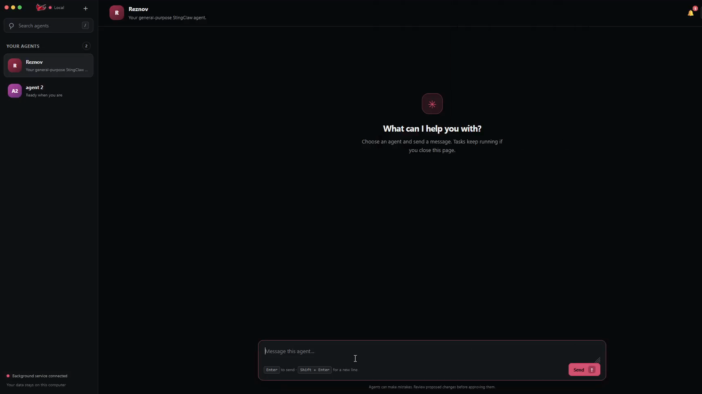

LOCAL AI · YOUR TERMS
Let an agent work on your project.
It can help. It still waits before changing anything.
›Review this project
Inspect files · prepare a change
▌Waiting for your approval
LOCAL AI · YOUR TERMS
It can help. It still waits before changing anything.
A LOCAL WORKSPACE
Chat from the local web app or Telegram. Keep conversations and settings on your computer.

BUILT FOR HANDS-ON WORK
Give each agent a clear purpose, its own instructions, and the access it needs.
WINDOWS QUICK START
Install Bun, clone the repository, install dependencies, then start StingClaw.
ONE AGENT PER KIND OF WORK
Choose its model, order its API keys, write instructions, and set permissions.
PICK THE RIGHT LEVEL OF ACTION
Three modes make the agent’s limits clear before work begins.
THE HUMAN IN THE LOOP
Inspect the diff. Approve the change, or reject it and leave your files as they are.
MORE THAN ONE TOOL
Agents can ask saved agents for read-only research, follow supported skill files, and search public pages when web access is enabled.
SAME SAVED AGENTS, AWAY FROM YOUR DESK
Pair your Telegram account, choose an agent, and follow progress. Review requests can return to Telegram too.
MAKE THE WORK CONTINUE
Save a preference, create daily or weekly jobs, and check their run history.
KNOW WHERE EACH PART GOES
Agent data is stored locally. Prompts go to your chosen model provider. Optional web and messaging services handle their own requests.
Background jobs run only while the computer and service are on.
YOUR AGENTS · YOUR KEYS · YOUR FILES
Start with one agent. Keep the final say.
MEET STINGCLAW